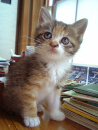

|
■2005/06/27/(Mon)21:03
不思議猫みーみたん
|

さて。
実家の前に捨てられていた猫。
「みーみ」は、結局実家に同居している祖母が飼うことになりやした。
…とゆーのも不思議な話が。
祖母はコマちゃんとゆー猫を８年間溺愛していたのだが、
「みーみ」が来る前日に、そのコマちゃんは散歩に出たまま帰ってこなく
なったのでした。
探しても探しても見つからないコマちゃん。
前日に体調を崩していたから動物病院に連れていったばかりだっので、
家族総出で探したものの見つからず…
そんな中ウチにやってきた「みーみ」
教えたわけでもないのに…エサの場所、トイレの場所へトコトコ…
極めつけは…
コマちゃんだけが使っていた水のみ場（風呂場の横で洗面器に水を張ってるだけ）に、トコトコトコ…
なぜウチの勝手がわかってるのだー！
しかもまだ生後1ヶ月くらいなのに、一度も粗相なし…。
まったく祖母を困らせないらしい…
どこかで教育を受けてきたとしか思えない「みーみ」…
祖母は高齢でちょっとボケ気味なので、祖母のそばにいられなくなるのを悟ったコマちゃんが祖母を心配して「みーみ」を連れてきたとしか思えない…とウチの母と言っていたのでした。
ホントに謎の多い猫「みーみたん」です。
|
| |